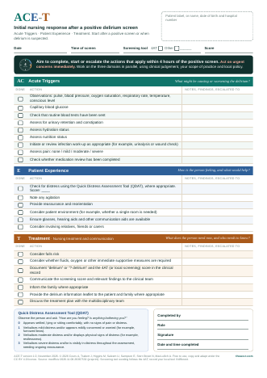
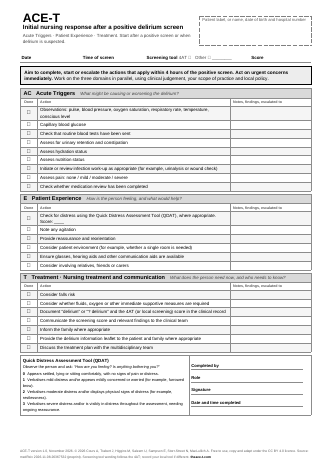
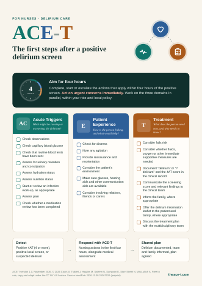

ACE-T bedside form
All 22 prompts with tick boxes and space for notes, the four-hour target, the distress score and a signature block. Ready to print.
Downloads
Print the bedside form for the ward, edit the Word version to match your local wording, or put the poster up where staff will see it.

All 22 prompts with tick boxes and space for notes, the four-hour target, the distress score and a signature block. Ready to print.

The same form as a Word document, in black and white. Change the screening tool, local escalation route or wording to fit your service.

A colour poster of the three domains and the four-hour target, for staff rooms, nursing stations and teaching.
ACE-T is free to use. No permission, payment or registration is needed. Version 1.0 is licensed under CC BY 4.0, so you may copy, adapt and translate it, and build it into electronic records, with credit to the source. Licence and how to credit ACE-T.
ACE-T version 1.0. Website download release: 14 November 2026. The bedside prompts follow Table 1 of the ACE-T development and pilot paper, which is available as a preprint on medRxiv. The PDFs and editable Word file contain the same clinical prompts. This release date identifies the website download set.
For the tool’s development and early evidence, cite: Cours A, Trabert J, Higgins M, Saleem U, Sampson E, Storr-Street N, MacLullich A. Development and pilot evaluation of ACE-T, a nurse-focused delirium initial-response tool, across three health systems. medRxiv 2026.11.08.26367532 (preprint). doi: 10.64898/2026.11.08.26367532.
For this download set, cite: MacLullich A. ACE-T delirium nursing tool, version 1.0: website downloads. Website release 14 November 2026. theace-t.com/downloads.html. Include the date you accessed the files. Sources and publication status.
For teaching sessions, or for listening without the animation.
ACE-T supports clinical judgement, local policy and the agreed treatment plan. If you adapt the Word version, keep the three domains and the four-hour target, and check the wording with your local delirium lead or practice educator.
A completed form contains patient information. Store it in line with your organisation’s records policy. This website does not collect any patient data.
The form prompts you to offer a delirium information leaflet. If your ward has no leaflet, Delirium Support has free printable ones in A4 and US Letter, including “What is delirium?”.
If your ward or hospital is using or testing ACE-T, please tell us. It is optional and takes about a minute. You do not need to tell us before you use the form.
We use replies to learn where ACE-T is used and what should change, and to invite sites to share audit results. Please do not include patient information.
ACE-T is in English at present. If you would like to translate it, please write to us first, so that we can list the translation here. Name the translator or team, keep the three domains and all 22 prompts, and describe any changes you make. Translations are covered by the same CC BY 4.0 licence.
This site uses limited Google Analytics to count visits and downloads. Advertising tracking is off. You can turn analytics off now, or later through “Analytics preferences” in the footer. Privacy information